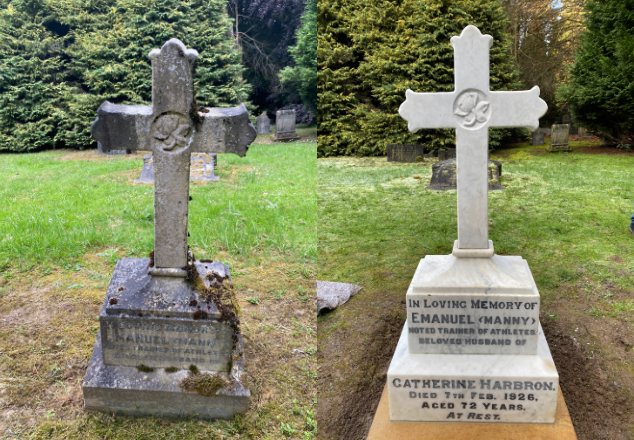

Cleaning and Restoration of Headstones
Headstones, Memorials and Gravestones of all styles are exposed to many elements that can cause a deterioration in, or appear on the surface of the material.
Headstones, Memorials and Gravestones of all styles are exposed to many elements that can cause a deterioration in, or appear on the surface of the material.
Marble memorials become dark over time with the build up of algae and other deposits from natural weathering. This can be cleaned in a number of ways, and it is worth considering the customers budget for the works and timescale to have the work completed.